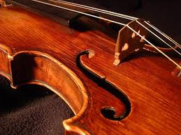

My extracurricular subjects are mainly focused on music. I participate in three kinds of voice, and play the piano and violin.
Voice - 9 years
A microphone and headphones, showing my love for singing
Choir
Carnatic (An Indian style of singing)
Hindustani (Another Indian style of singing)
Piano - 9 years
Piano keys, showing my love for piano
I have participated in the Certificate of Merit (a musical evalutaion test that includes technique, theory, and the performance of musical pieces from different eras) for piano since 3rd grade and I am now in level 6. Last year, I recieved Branch and State Honors for excellence in performace and evaluation.
Violin - 7 years
 A closeup of a violin, showing my love for violin
I have participated in the Certificate of Merit for violin since 7th grade and I am now in level 6. Last year, I recieved Branch and State Honors for excellence in performace and evaluation.
 A microphone and headphones, showing my love for singing
A microphone and headphones, showing my love for singing